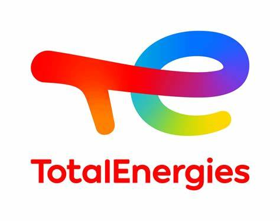

Total Energie Mondorf-les-Bains
- août 2022
- vente dans uns station service
- mise en rayon
- gestion de la caisse enregistreuse
ijssalon Thionville
- juillet 2022 - août 2022
- vente dans un magasion de glace
- confections et montages des différentes glaces
- gestion de la caisse enregistreuse
- extra durant l'année scolaire (les week-end le mois de juillet) et pendants les vacances scolaires

NumériCompta Marseille
- juillet 2021 - décembre 2021
- stage de 2nd année EPITECH Nancy
- Création d'un algorythme de catégorisation des libellés bancaires en PL/PGSQL pour les comptes professionnelles et privés
- affichage de graphique dans l'application NumériBureau (pour les clients) afin de visualiser les comptes bancaires; en python

Central Pizza Garche (Thionville)
- 2018 - 2020
- travail d'été et extra durant l'année scolaire dans la vente de pizza
- confections des pizza
- vente au client
- gestion de la caisse enregistreuse